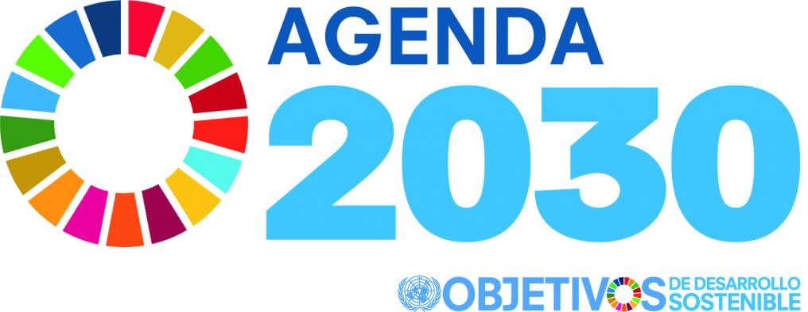

SUSTENTABILIDADE
A sustentabilidade consiste em atender às necessidades das gerações atuais sem comprometer as necessidades das gerações futuras, garantindo ao mesmo tempo um equilíbrio entre o crescimento econômico, o respeito pelo meio ambiente e o bem-estar social. A sustentabilidade engloba a ação de preservar o meio ambiente no geral, sendo assim ela possui vários tipos, tanto quanto individuais como empresariais

AGENDA 2023 DA ONU
O ODS 13 irá tratar especificamente sobre um dos maiores problemas ambientais da atualidade, a Mudança Climática. Segundo a ONU, a mudança climática é um dos maiores desafios da atualidade e sem uma “ação drástica hoje”, será extremamente difícil e caro “superar as consequências” dos impactos gerados por esse problema. Mudança climática significa alterações nas condições do clima da Terra ao longo do tempo pelo acúmulo dos gases de efeito estufa (GEE), como o dióxido de carbono (CO2) e o metano (CH4), lançados na atmosfera principalmente desde a Revolução Industria.
O ODS 13 tem cinco metas que devem ser alcançadas até 2030. Elas cobrem uma ampla gama de questões relacionadas à ação climática. As três primeiras metas são metas de resultados : Fortalecer a resiliência e a capacidade de adaptação a desastres relacionados ao clima ; integrar medidas de mudança climática em políticas e planejamento; construir conhecimento e capacidade para enfrentar as mudanças climáticas. As duas metas restantes são meios de metas de implementação: Implementar a Convenção-Quadro das Nações Unidas sobre Mudança do Clima(UNFCCC) e promover mecanismos para aumentar a capacidade de planejamento e gestão. Junto com cada meta, existem indicadores que fornecem um método para revisar o progresso geral de cada meta. A UNFCCC é o principal fórum internacional e intergovernamental para negociar a resposta global às mudanças climáticas.
AÇÕES CONTRA A MUDANÇA GLOBAL
Nossas florestas, rios, oceanos e até mesmo locais remotos como o Ártico e a Antártida nunca estiveram tão ameaçados em toda a história da humanidade. Explorações predatórias ao longo dos anos estão esgotando os recursos naturais essenciais para a vida humana. E, é por isso, que defender o meio ambiente é defender a sobrevivência de todos nós no planeta. Aqui no Brasil, o nosso maior tesouro natural, a Amazônia, está em risco. Protegê-la e evitar a sua destruição é fundamental para enfrentar a Emergência Climática que estamos vivendo. Dona da maior biodiversidade do planeta e a maior floresta tropical do mundo, a Amazônia é responsável pelo regime de chuvas no Brasil e pelo equilíbrio climático global. Várias espécies já foram extintas e muitas outras correm o risco de desaparecer pela destruição dos seus ecossistemas.
O movimento ambientalista, iniciado por volta dos anos 1960, foi de grande relevância na mobilização das discussões sobre a problemática ambiental. A partir das pressões desse movimento é realizada, em 1972, a Conferência das Nações Unidas sobre Desenvolvimento e Meio Ambiente. Este encontro foi um marco histórico por ser a primeira vez em que representantes de diversas nações debateram sobre os problemas ambientais. Desta conferência é criado o Programa das Nações Unidas para o Meio Ambiente (PNUMA), agência do Sistema ONU responsável em estabelecer parcerias que objetivam proteger o meio ambiente, a fim de promover o desenvolvimento sustentável. Desde então, ocorre a busca em conscientizar sobre a urgência de reduzir os impactos ambientais e mudar a estratégia que determina as atividades econômicas.
Uma das iniciativas mais importantes nesse contexto foi a criação dos Objetivos do Desenvolvimento Sustentável (ODS), que são parte da Resolução 70/1 da Assembleia Geral das Nações Unidas da Agenda 2030. Foram determinados 17 objetivos que além de visar proteger o meio ambiente e lutar pela redução do aquecimento global, também abrangem questões como pobreza, fome, saúde, educação, igualdade de gênero, justiça social, saneamento, energia e urbanização.
Existem muitas ações que podem minimizar os impactos de mudanças climáticas, como o consumo consciente, uso de transporte público, redução no uso de água e energia elétrica, reuso de materiais. Esses são alguns exemplos de ações que podem ser desenvolvidas pela população para contribuir com a diminuição do impacto das mudanças climáticas e aumentar a qualidade de vida no planeta.
Ajude o meio ambiente com pequenas mudanças também é possível fazer doações: Faça sua doação e salve o planeta!
Entre as principais atividades humanas que causam o aquecimento global e consequentemente as mudanças climáticas, a queima de combustíveis fósseis (derivados do petróleo, carvão mineral e gás natural) para geração de energia, atividades industriais e transportes; conversão do uso do solo; agropecuária; descarte de resíduos sólidos (lixo) e desmatamento. Todas estas atividades emitem grande quantidade de CO² e de gases formadores do efeito estufa.
Você pode conferir mais sobre o assunto em: Ações que podem mudar o nosso futuro!
A escola é um dos melhores lugares para ensinar sobre questões ambientais, as crianças e adolescentes que estão em formação, criando suas ideias, e assim precisando ter acesso a informações, ensinamentos e boas ideias para colocá-las em prática.
Algumas das coisas que a escola poderia fazer pra poder ensinar as crianças a cuidar melhor do meio ambiente, o poluindo menos, como: fazer menos uso de papel, em provas e gabaritos, e no lugar, usar mais os laboratórios móveis, e computadores do laboratório, criação de uma matéria específica que conscientize os alunos ao aquecimento global, as aulas seriam com temas políticos, focando nos grandes agentes poluidores do planeta, agindo como um gatilho para que jovens se mobilizem politicamente a trazer o assunto à tona na política mundial, separar lixos em cada uma de suas finalidades para reciclagem, incluindo todos da escola, tendo campanhas semanais com palestras, com entrevistas de trabalhadores na coleta de lixo, incentivando os alunos a reciclarem e organizar o lixo por cores da reciclagem, com trabalhos e pesquisas sobre esse assunto, e passeios para museus ou lugares que incentivem a reciclagem com a arte, criar grupos de debates sobre sustentabilidade para despertar a autonomia dos alunos, os professores podem propor debates em grupo sobre assuntos relacionados à consciência ambiental, fazer campanhas e palestras de conscientização, ter lixeiras de reciclagem, mostrar para as crianças a importância da sustentabilidade.
Já nas escolas infantAKSis, primário e ensino fundamental, poderia ter brincadeiras, gincanas com este tema, e com prêmios, como bala, pirulito, o dia do aluno da sala, dia do brinquedo, assim ensinando as crianças de forma divertida e mais fácil de entender, de acordo com sua idade, incentivar e ensinar as crianças a criar brinquedos com materiais recicláveis também é uma ideia viável, mostrar filmes, vídeos (claramente apropriado para a idade) que mostram como o mundo sofre com as consequências do que os humanos fazem